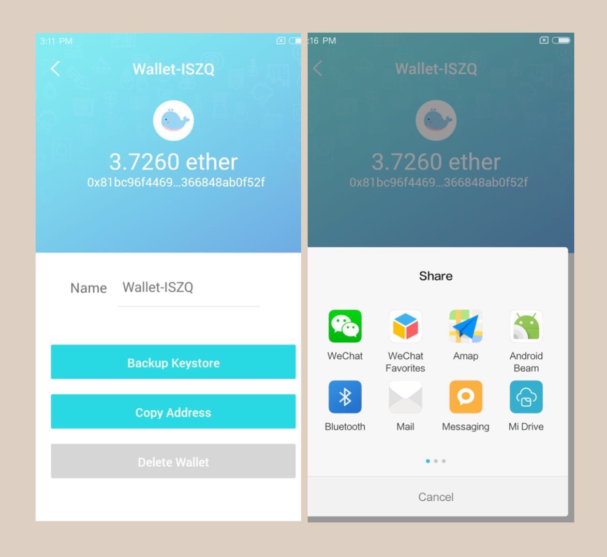

UniWallet supports wallet backup through exporting keystore string.
Click "Me" and "Wallets" ——> Select one wallet to backup.
Click "Backup keystore" ——> Input password ——> Select one method to record the keystore string.
